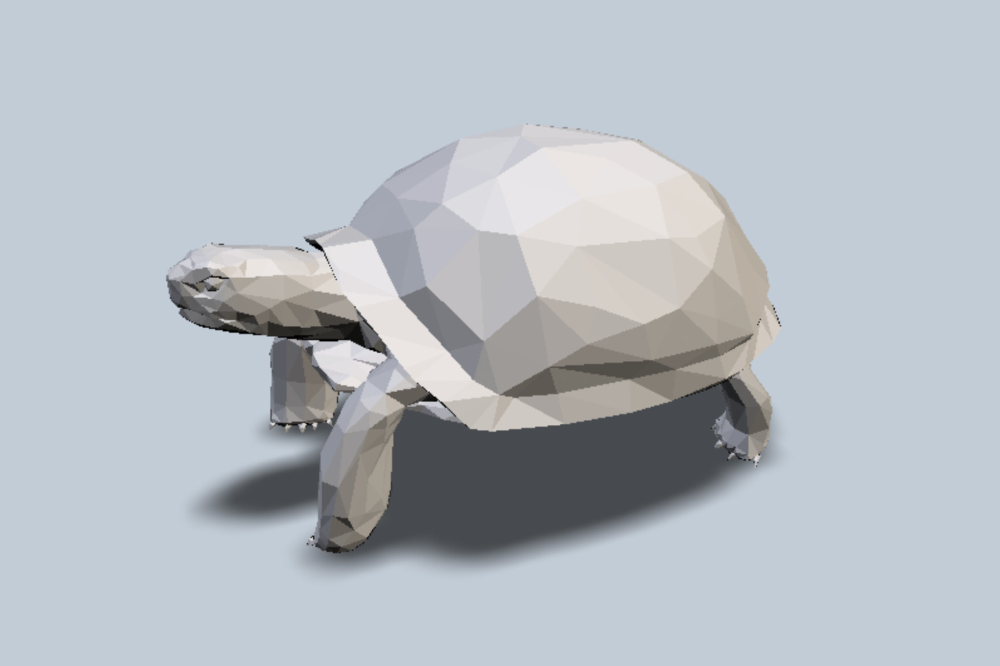
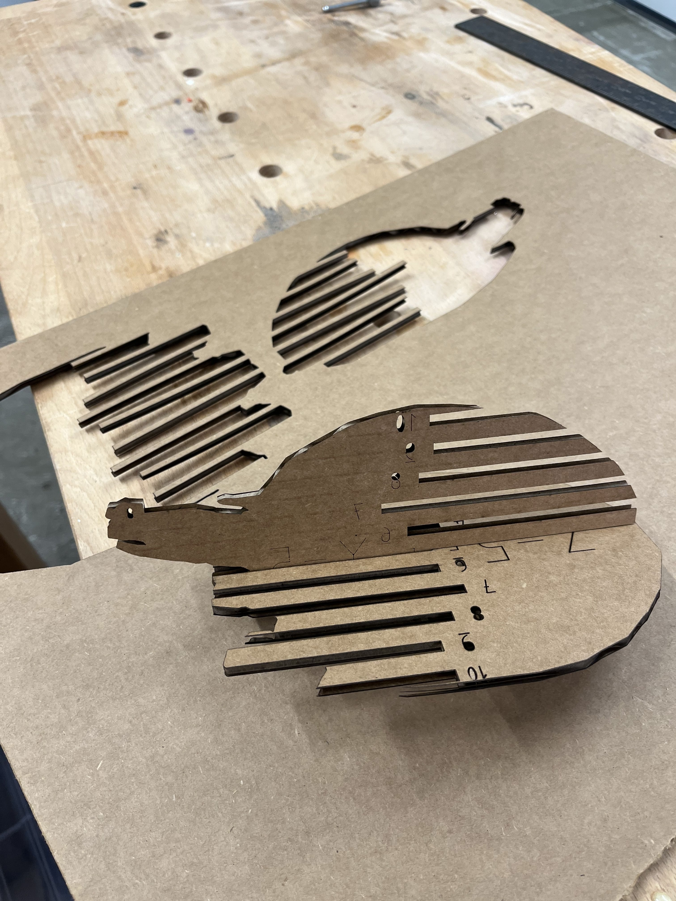
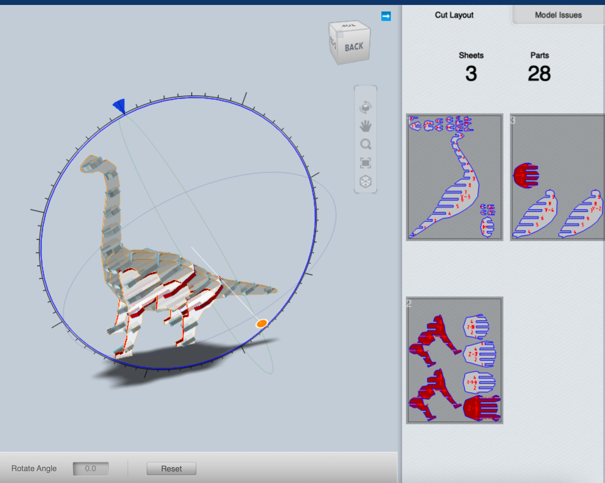
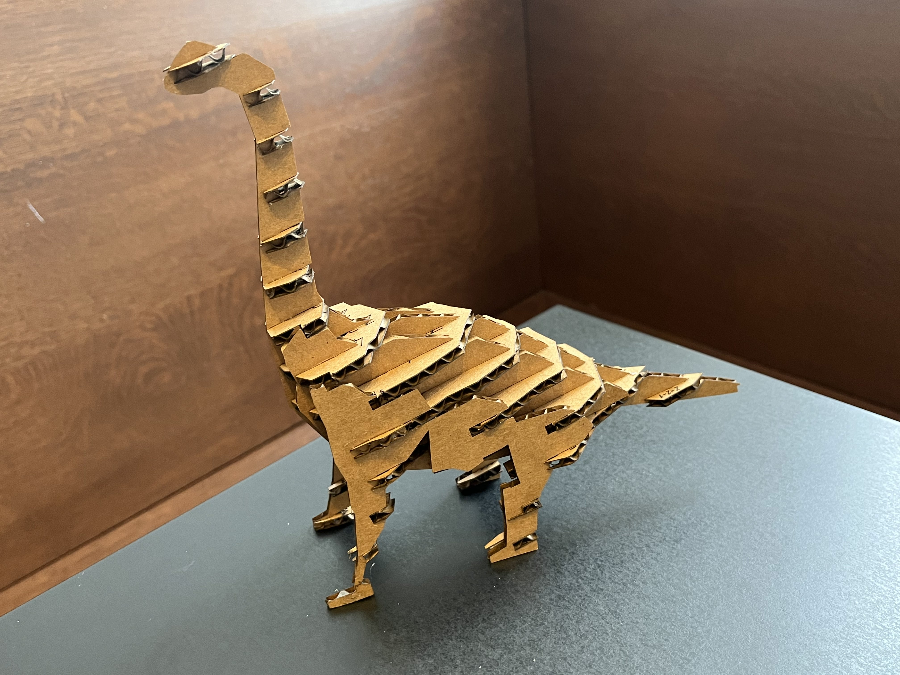
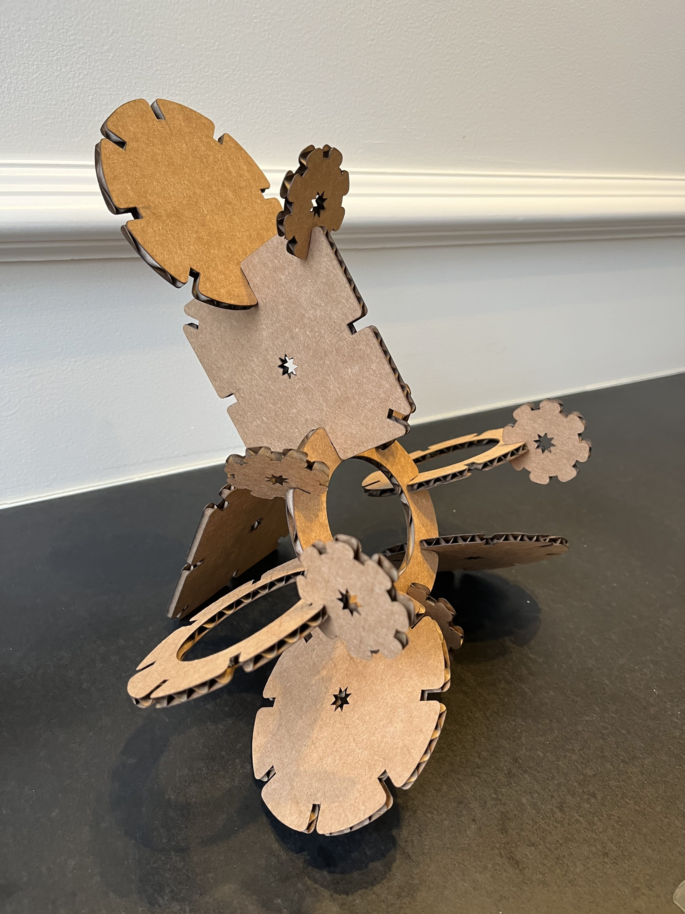
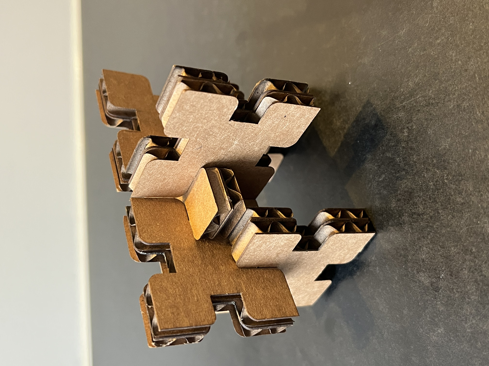
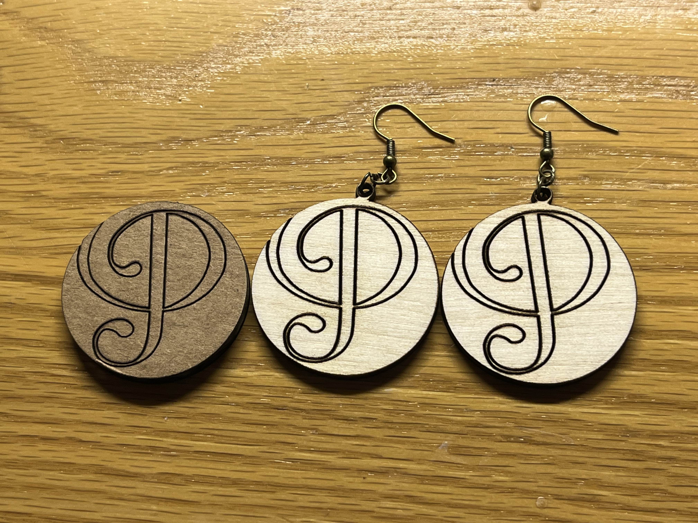
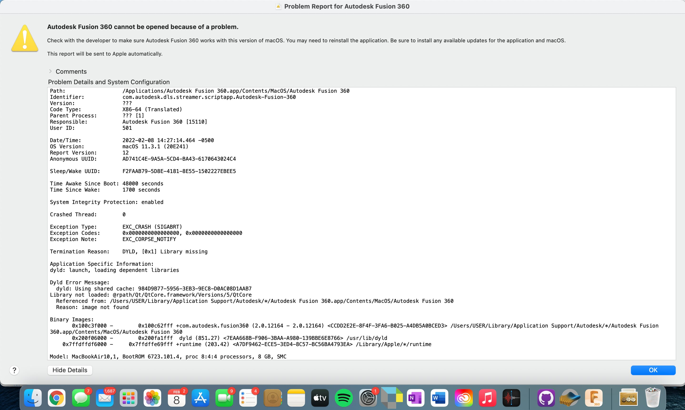
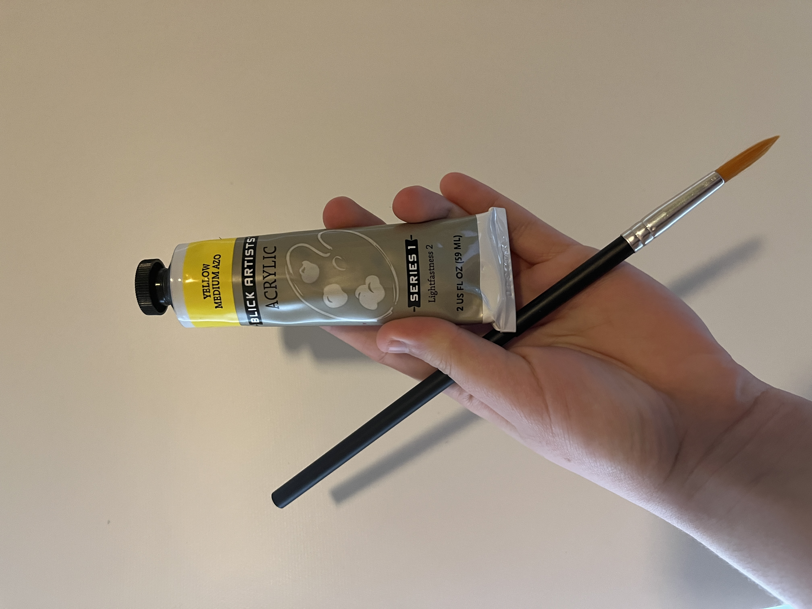
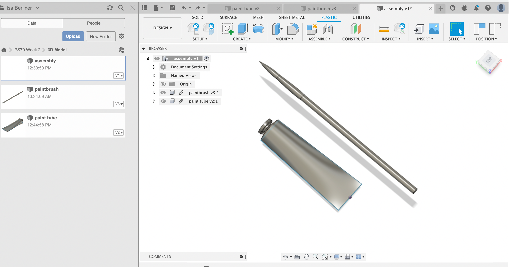

<div class="container-fluid">
<h3 style="text-align: center;"> Week 2: 2D Design & Cutting </h3>
<h4 style="color: black;background-color:#6EDCF7;"> Press-Fit Construction Kit: Tortoise!</h4>
<p>For my press-fit construction kit, I was excited to try using the Slicer for Fusion 360 tool that we were shown in class. After experimenting with the program for far too long, I figured out which kinds of shapes translated best to the sliced cardboard and settled on a tortoise (I had two pet tortoises growing up so this felt like a fitting tribute to Batty and Cyclone, may they rest in peace). I was able to find the perfect <a href="https://www.cgtrader.com/items/3082590/download-page">free 3D model</a> that I could download and import directly into the slicer. </p>
<p>
I adjusted the dimensions of the tortoise to make it closer to the size of my pet tortoises and set the material settings. This was where I got a bit confused because I was unsure where in the program I was supposed to account for kerf. My best guess was that the material setting called “slot offset” might be my best bet. With help from Gabby, I decided to set the slot offset at 0.2 and do a test cut. I selected 2 pieces that would need to fit together and cut just those 2 on the laser cutter.
This test was mostly successful but Gabby and I agreed that the notches could be a bit tighter, so I increased the slot offset to 0.25 and cut the same 2 pieces. This time it was truly a perfect fit and I went full steam ahead cutting the rest of the tortoise. </p>
<p><img src=../02/assembling.jpg alt="Assembling" style="float:right;width:300px;height:auto;">
Once I had all the pieces cut out, I spread them out on a table and proceeded to spend almost 2 hours trying to assemble the little guy. It was surprisingly difficult, especially because I realized there was a small but significant error in either the design of the slicer program or in my use of it. Essentially, there were some pieces that fit together perfectly in theory, but were shaped in such a way that it was impossible to actually put them together (most pieces have to slide in but there would be another part of the piece that blocks the slide). I ended up having to gently bend the cardboard to allow the pieces to fit together - luckily the pieces remained intact and though slightly bent and weakened, did not disrupt the final shape of the tortoise. </p>
<p>I was extremely happy with my tortoise and felt all was good in the world, but then tragedy struck. On the tumultuous walk back to my room from the science center, the aggressive winds threatened to destroy my poor tortoise. I prioritized protecting my tortoise at the cost of my frozen fingers, but alas, upon arriving home, I discovered that though I retained all my fingers, my tortoise had not been so lucky. Several of the smaller pieces on the tortoises legs had been lost to the elements. Determined not to leave my tortoise suffering, I returned to the science center the next day and cut new limbs for my tortoise. With the help of some glue to ensure this tragedy does not occur again, my tortoise has healed nicely and is doing quite well. </p>
<center><img src=../02/tortoise.jpg alt="Tortoise" style="width:500px;height:auto;"></center>
<h4 style="color: black; background-color:#6EDCF7;"> Press-Fit Kit 2: Dino Friend For Tortoise </h4>
<p>
<p>
I was very pleased with my tortoise but thought she could use a friend (especially after the trauma of losing some limbs). I was also far from done experimenting with the slicer. I decided to make a <a href="https://www.cgtrader.com/items/2564937/download-page">little dinosaur</a> to keep my tortoise company. I was intrigued by the setting that allows you to change the slice direction, so this time I played around with changing the angle for the slices.
Once I was happy with the design, I cut out my pieces and assembled my dinosaur (I did a small test run again to check the slot offset and it was perfect on the first try!). It was definitely much easier to assemble the second time around after getting used to the logic of how the pieces are made to fit together. I still ran into similar issues with pieces that defy logic and the rules of the physical world, but I was able to get it all to fit together in the end.
</p></p>
<h4 style="color: black; background-color:#6EDCF7;"> Fusion 360 Practice + Just For Fun </h4>
<p>
<p> While I greatly enjoyed making my animal buddies, I wanted a bit more practice designing from scratch in Fusion 360, so I decided to make a few simple connecting pieces. I followed the listed Fusion tutorial to make a sketch and then repeated the process to make slightly different shapes. On my first try, I made the silly mistake of forgetting to do half the material thickness minus kerf, and ended up with notches that were twice the size of my pieces. Not wanting these to go to waste, I decided to just glue them together so that each piece would be double the thickness and thus fit the notches (this also let me still use these as an accurate test of my measurements). This worked great and I actually quite enjoy my thicker pieces.
From there, I was able to fix the notch width and make several other designs and shapes, which while not as planned out and detailed as my animals, were quite fun to play with! I especially enjoyed the little stars that formed in the center of my shapes from all my construction lines in Fusion, so I decided to make the little star be cut out as a fun little accent to my shapes. </p>
<p>This ended up leading me down a small rabbit hole: I decided to keep the little stars that were cut out because I thought they could be fun to make into earrings. This made my brain make the connection that I could use Fusion and the laser cutter to make earrings. Wanting to start simple, I used Fusion to trace the logo of my a cappella group. Using colors to make layers, I cut the outer perimeter of the logo completely, but reduced the power on the laser cutter for the inside of the logo so it would just engrave the shape. After a few adjustments (mostly to make an effective hole at the top for an earring hook to hang from) I was extremely pleased with my cardboard earring. I decided to try the same design on wood. After a few tests to figure out the speed and power settings, I was able to make earrings! I'm very excited to continue exploring applications of Fusion and the laser cutter. The possibilities seem endless!</p> <center></center>
<h4 style="color: black; background-color:#6EDCF7;"> Modeling Household Objects </h4>
<p>Unfortunately, Fusion has been giving me a bit of a headache by moving at snail pace and crashing constantly. For my press-fits, I was able to get away with my dysfunctional Fusion with patience and a lot of time, but when I tried to model my objects (I'm doing a paintbrush and tube of paint), it was becoming more of a problem. Most recently, I started receiving the below error message and haven't been able to open Fusion at all (I have already tried deleting and reinstalling as the message suggest). I have tried everything I can think of to fix this but now Fusion won't open at all (not even an error message - I try to open the app and it just immediately disappears as if I didn't try to open it). I will try to problem solve and come back to this later!
<center></center>
<p> It is now later! Unfortunately, I have not fully solved my Fusion problems but I've learned that uninstalling and reinstalling Fusion usually gets me a couple hours of functionality and then it stops opening the app and I have to uninstall and reinstall again. Not the greatest system but it worked enough to finish my models.
I wasn’t quite sure how to start modeling a round object, so I looked up a few tutorials for things like water bottles to get inspiration. This was super helpful and I knew where to begin! I measured the dimensions of the paintbrush using a caliper and started by drawing lines to mark half the width of each part of the paintbrush. I then drew lines for each part (the handle, the metal base, and the brush) using the first lines to mark the distance from the origin. From this I was able to use the revolve tool to generate the finished paintbrush! For the paint tube, the revolve tool worked for the cap, but I needed to do something else for the base of the tube. After much confusion I found the loft tool and was able to complete my paint tube. Below is an assembly with my finished paint tube and brush! I definitely need more practice with 3d modeling so that it doesn’t take me so long, but I think this was a pretty good first attempt!
</p>
<center> </center>